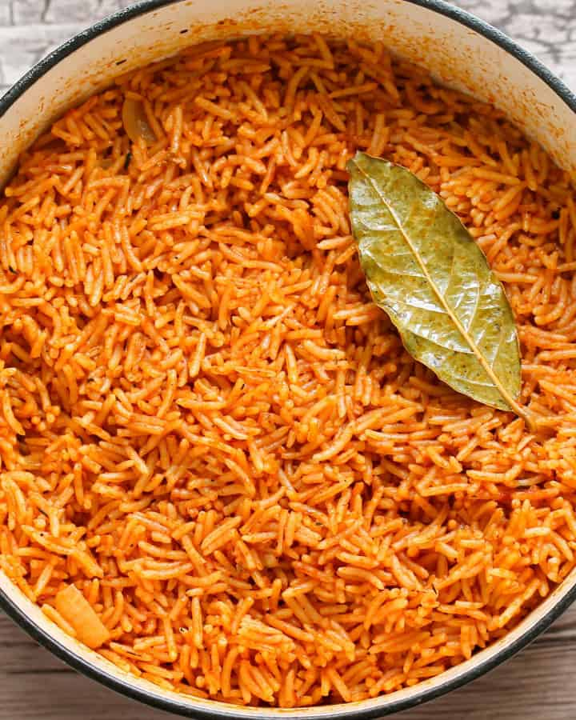

Jollof Rice

Jollof rice is a staple in West African cuisine.
Its made from rice, tomatoes, onions, peppers, and other seasonings
The dish is cooked in one pot. Its simple and easy to make at home and the end result is
delicious.
Ingredients
- Rice
- Tomatoes
- Pepper
- Ginger
- Garlic
Steps iin cooking Jollof Rice
- Blend Tomatoes, scotch bonnet and tatashe together
- Put rice into a bowl and soak with hot water
- Heat up your oil
- Add and fry your blended ingredients and puree for 10-15 minutes
- Add your maggi,garlic,ginger, curry and thyme
- Put your rice into a pot and mix together
- Cook on low medium heat
- Cook until soft